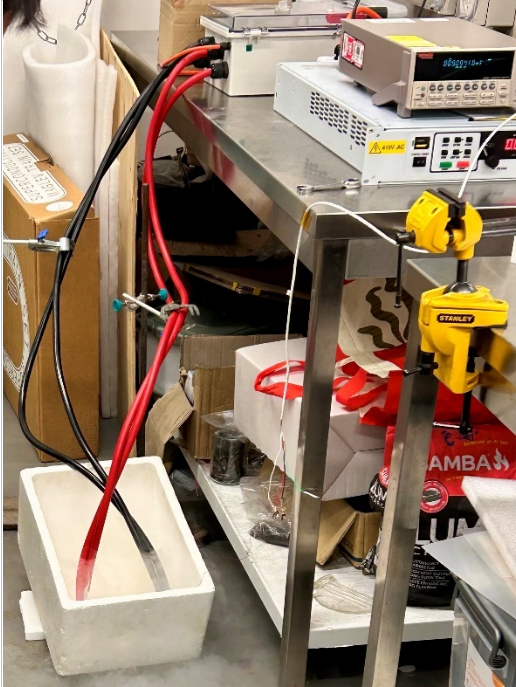

Étude expérimentale de l'impact de la déformation mécanique sur le courant critique et les propriétés supraconductrices de rubans YBCO, en vue d'applications aimants d'IRM sans hélium liquide.
Les supraconducteurs de type 2 à haute température critique (HTS), comme le YBCO (Yttrium Barium Copper Oxide), permettent de créer des champs magnétiques intenses tout en n'exigeant qu'un refroidissement à l'azote liquide plutôt qu'à l'hélium liquide — un enjeu majeur pour les aimants d'IRM et les systèmes de lévitation magnétique. Le YBCO est utilisé sous forme de ruban supraconducteur, souvent soumis à des contraintes mécaniques (flexion, torsion) en application réelle.
Déterminer l'impact de la flexion d'un ruban YBCO sur sa capacité de transport de courant, puis comprendre comment cette déformation affecte les performances des applications supraconductrices.
Courant critique : ≈105 A (ruban droit) contre ≈178 A (ruban courbé) — un résultat contre-intuitif expliqué par la redistribution bénéfique des lacunes d'oxygène vers les plans CuO₂ sous contrainte. Champ magnétique de la bobine : jusqu'à 5 T à 100 A, avec une relation linéaire conforme à la théorie (B = μ₀nI).

L'analyse SEM a révélé une microstructure plus irrégulière en surface du ruban courbé (fissures, réseaux de dislocations), tandis que l'EDS a confirmé la composition attendue (Cu, Ba, Y, Ag, O) et mis en évidence une redistribution de l'oxygène cohérente avec l'amélioration du courant critique observée.
Ces résultats confirment qu'une déformation mécanique contrôlée peut être exploitée stratégiquement pour optimiser la performance des rubans supraconducteurs — un levier pertinent pour les aimants d'IRM, la lévitation magnétique et le stockage d'énergie.